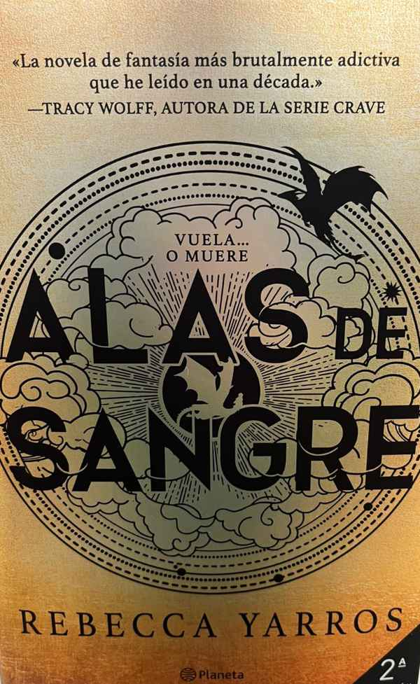
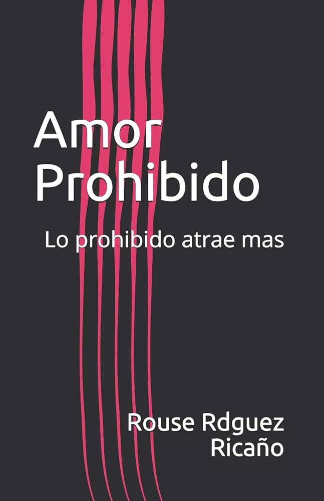
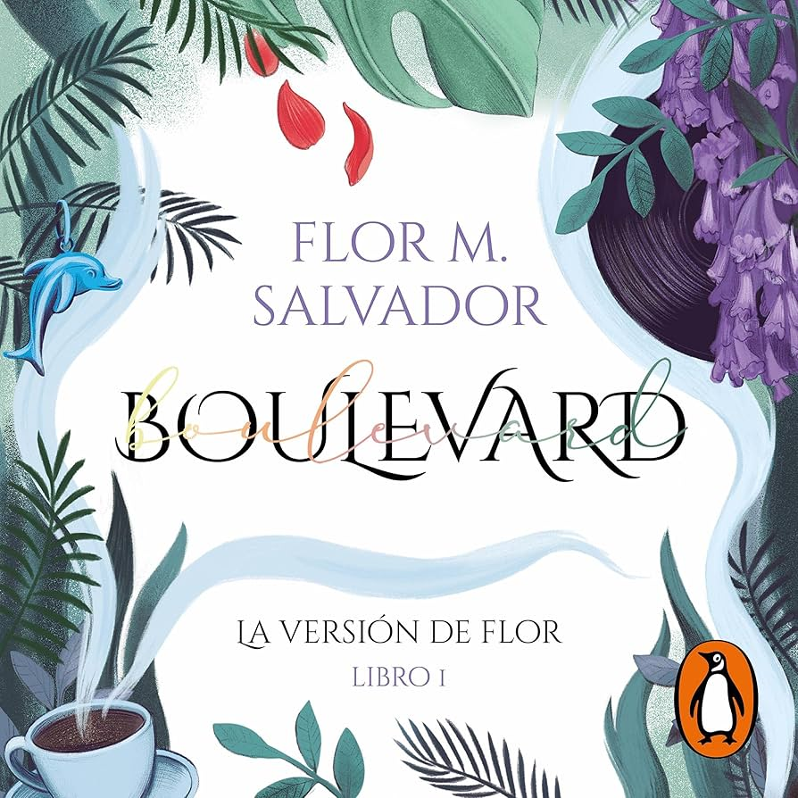
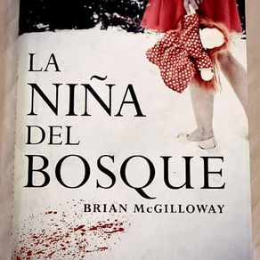

A dos metros de ti

Dos adolescentes, Stella y Will, se encuentran en un hospital debido a las graves enfermedades que padecen y que amenazan su vida. Poco a poco comienzan a conocerse y enamorarse, pero deberán enfrentarse a las reglas hospitalarias que los alejan.
Alas de Sangre

Sigue a Violet Sorrengail, una joven frágil forzada por su madre a unirse al brutal Colegio de Guerra Basgiath para ser jinete de dragones.
Amor Prohibido

Narra la historia de Bihter Yöreoğlu, una joven que se casa con Adnan, un millonario mucho mayor, para vengarse de su madre codiciosa. Sin embargo, Bihter cae en una pasión prohibida con Behlül, el apuesto y superficial sobrino de su esposo, desatando un romance secreto y peligroso que destruye a la familia.
Boulevard

Narra la historia de Hasley Weigel y Luke Howland, dos adolescentes con mundos opuestos. Hasley, optimista, se acerca a Luke, un joven sumido en la oscuridad, las drogas y la depresión por traumas familiares. Juntos crean un "boulevard" de amor, pero la trama concluye con la trágica muerte de Luke.
La Niña del Bosque

La detective Lucy Black investiga la aparición de una niña en shock, cubierta de sangre en un bosque nevado, mientras conecta el caso con el secuestro de otra joven, desenterrando secretos oscuros del pasado local.
La Biblioteca de Fuego
Narra la historia de Tina, una joven que sueña con ser bibliotecaria y se une a la "Biblioteca Invisible", una sociedad secreta que protege libros prohibidos de la censura y destrucción durante la Guerra Civil Española.